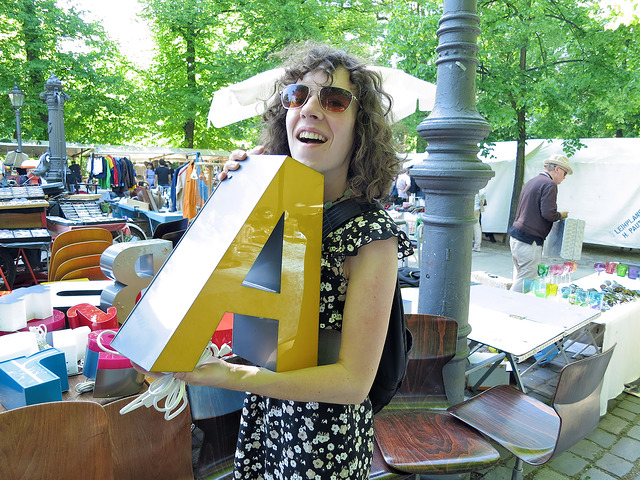

About me
I'm an Associate Professor in the Department of Mathematics & Applied Mathematics at VCU.
My research interests are in low-dimensional topology and geometry, especially knots, links and their relationships with three and four-manifolds. This involves some Floer homology (particularly Heegaard Floer homology) and Khovanov homology. I am also interested in the applications of knot theory to the study of entanglement in DNA and RNA. My work has been supported by the Jeffress Trust Award in Interdisciplinary Research and the National Science Foundation, DMS–2204148.
Prior to arriving at VCU, I was a Krener Assistant Professor of Mathematics at the University of California, Davis from 2016-2019. For two of those years, I also held a joint appointment as a postdoc in the Department of Microbiology and Molecular Genetics, collaborating with the Topological Molecular Biology lab.
From 2013-2016, I was an RTG Lovett Instructor of Mathematics at Rice University, in Houston, Texas. I worked in low-dimensional topology. I received my Ph.D. in 2013 at The University of Texas, under the direction of Cameron Gordon.
Contact Information
email: moorea14 at vcu dot edu
office: Harris Hall 4149
office hours: By Zoom appointment
Postal mail:
Dr. Allison H. Moore
Department of Mathematics & Applied Mathematics
Virginia Commonwealth University
1015 Floyd Avenue | Box 842014
Richmond, VA 23284-2014
Conferences I've co-organized

This page last updated June 30, 2024. After this date, please visit allisonhmoore.com.
Links
- KnotInfo: The Table of Knot Invariants -- Livingston's database of knot and link invariants, which I assist in maintaining. We are currently seeking data for 13 crossing knots!
- VCU Geometry and Topology Seminar and Student Seminar info
- VCU Geometry Camp
- Press About Geometry Camp
- Virtual Low-Dimensional Topology.
- The CompuTop.org Software Archive -- Dunfield's archive of software and computational tools in topology.
- Fun Miscellany